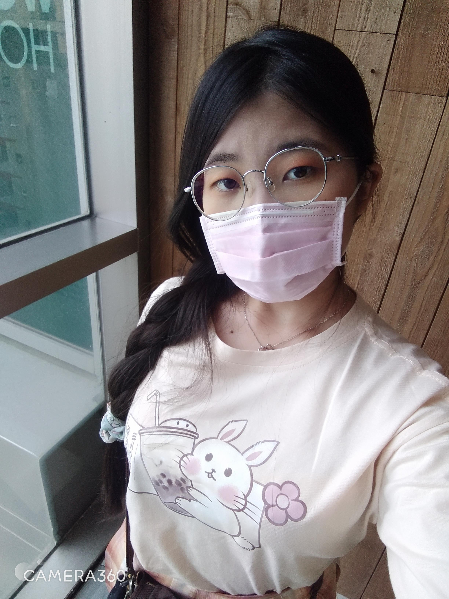

我的自傳
壹、求學過程：
在我的求學過程中，我經歷了一段相當平穩但充實的時光。從育英國小到員林國中，我的成績一直表現出色，這使我得以進入精進班，也因此每天都在升學壓力的氣氛下度過，體驗了不同的青澀歲月。這段時期鞏固了我的學科基礎，為我後續的學習奠定了堅實的基礎。
我成功地考取了國立彰化女中，這是我學習生涯中的一個重要里程碑。在這所學校，我繼續努力學習，拓展自己的知識面和技能，並且積極參與各種課外活動和志願服務。這段時期不僅豐富了我的學術生活，也培養了我團隊合作和社會責任感。
隨後，我進入了亞洲大學資工系，開始了我在資訊領域的探索之旅。然而，在這段旅程中，做出了轉學的決定，進入了宜蘭大學的電子系。我的求學過程雖然平穩，但也充滿了挑戰和成長。這段經歷讓我學會了堅持不懈、勇於嘗試和不斷進步，這將成為我人生道路上的寶貴財富。
資訊志工隊服務心得：
在資訊志工隊的服務經歷讓我獲益良多。當時我高二，出於對資訊領域的興趣和對服務的熱情，我毅然加入了資訊志工隊。在這個志願服務團隊中，我有幸參加了各種研習，包括 Unity、VR、PHP 等，從中學到了大量的程式和電腦方面的新知識。
這段期間，我深受許多學長姐的幫助和指導，他們給予了我許多寶貴的建議和經驗分享，使我對資訊工程領域有了更深入的認識，也更加堅定了我以資工系為升學目標的決心。
其中一次特別深刻的經歷是我到鹿鳴國中去服務偏鄉的小朋友。這是我第一次利用自己的程式技能來幫助他人，看到小朋友們開心地玩著我寫出來的程式，我心中湧起了難以言喻的成就感和滿足感。這個經驗不僅讓我意識到了程式能夠為社會帶來正面影響，也加深了我對資訊領域的熱愛和堅持。
這段資訊志工隊的服務經歷不僅豐富了我的學習和技能，更讓我體會到了服務他人的快樂和意義。這將是我人生中一段寶貴的回憶，也將影響著我未來的學業和職業生涯。
貳、工作經驗：
我目前主要以兼職為主，其中主要從事餐飲服務業。在這段時間裡，我積累了豐富的客戶服務經驗，學會了如何有效地溝通、解決問題，以及處理高壓情況的能力。這些技能在我日後的工作中都將大有裨益。
此外，在學期間，我也參與了偏鄉國小的程式和數學教學工作。這份工作不僅讓我將所學知識付諸實踐，還培養了我耐心、教學和組織能力。透過與學生的互動，我學會了如何用不同的方式解釋複雜的概念，並激發學生的學習興趣。
這些工作經驗不僅豐富了我的履歷，更讓我得到了實踐中的成長和提升。我相信這些經驗將成為我未來職業發展的堅實基礎，使我能夠在各個領域中更加出色地發揮自己的能力。
參、職涯規劃：
目前我的短期規劃是繼續升學，希望能攻讀碩士學位。透過深入的學術研究和專業知識的學習，我將能夠更深入地理解軟體工程領域的理論和實踐。這對我未來從事軟體工程師的工作將是一個重要的基礎。
在未來，我期待著成為一名優秀的軟體工程師。我希望能夠參與開發創新的軟體產品和解決方案，並將我的專業知識和技能應用於實際的項目中。我相信軟體工程是一個充滿挑戰和機遇的領域，我願意不斷地學習和成長，以應對快速變化的技術環境。
此外，我也希望能夠在工作中發揮創造力和團隊合作精神，與同事們共同攜手解決問題，實現項目的成功。我相信通過不斷地學習和努力工作，我能夠在軟體工程領域取得優異的成就，並為公司和社會做出積極的貢獻。
肆、工作價值：
同事之間的溝通和工作氣氛對於團隊的效率和凝聚力至關重要。我認為建立良好的工作氛圍能夠促進團隊合作，提高工作效率，並且增進彼此之間的信任和理解。
作為一名團隊成員，我會積極參與團隊活動，促進團隊之間的溝通和交流。我樂於分享自己的想法和經驗，並且願意傾聽他人的意見和建議。我相信開放、誠實的溝通是解決問題和取得成功的關鍵。
此外，我也認為建立一個積極向上的工作氛圍能夠激勵團隊成員充分發揮自己的潛力，並且共同追求目標的實現。我會通過積極的態度和努力工作來影響他人，共同創造一個充滿活力和正能量的工作環境。
總的來說，我認為同事之間的溝通和工作氣氛是最重要的工作價值之一，我將努力維護這樣一個良好的工作氛圍，促進團隊的合作和共同成長。
TOP
`
人格特質與興趣
我認為自己具有獨立自主的個性，並擁有一顆熱心服務他人的熱情。我相信堅持不懈地追求理想是實現成功的關鍵。一旦我確定了目標，我會全力以赴，不論遇到什麼挑戰，都會持之以恆地前進。
在興趣方面，我對電腦和閱讀深感興趣。特別是在這個資訊時代，我深知掌握時間對於事物的敏銳觀察和理解至關重要，這樣才不會被社會的洪流所淹沒。
因此，我經常花時間上網搜尋資料並製作報告，同時也會關注時事新聞和閱讀課外書籍。
時事新聞讓我更清楚地了解國際情勢和生活周遭的人、事、物，而閱讀則讓我增廣見聞，學習剖析事理，提升人文素養。這些活動不僅豐富了我的知識，還讓我擁有更廣泛的視野，能夠更好地理解世界的運作和人們的行為。
我期許自己能夠在科技資訊和社會、人文領域取得更深入的理解和成就，並將這些知識應用於實際生活中，為社會做出積極的貢獻。無論是在尋求創新解決方案還是在幫助他人解決問題上，我都希望能夠成為一個積極的力量，影響著周遭的人們，讓世界變得更美好。
TOP
`
我的學校
國立彰化女子高級中學（英語：National Changhua Girls' Senior High School，CHGSH），簡稱彰化女中、彰女，舊稱省彰女。位於台灣彰化縣彰化市，是隸屬於教育部國民及學前教育署的普通型高級中等學校，創立於1919年4月，日治時期為中台灣台籍女學生主要就讀學校。校徽為鳳凰，上面繡有彰女字樣，白衣黑裙制服為其象徵。
亞洲大學（英語名：Asia University），簡稱亞大、AU ，是一所位於臺灣臺中市霧峰區的私立綜合大學，2016年與姊妹校中國醫藥大學合作開設亞洲大學附屬醫院。
學術單位包括醫學暨健康學院、資訊電機學院、管理學院、人文社會學院、創意設計學院、護理學院、國際學院、人工智慧學院共8學院。(出自維基百科)
國立宜蘭大學（英語名：National Ilan University），簡稱宜蘭大學、宜大、NIU，是一所位於臺灣宜蘭縣的國立大學。設有校本部、松瑞、城南三個校區及大礁溪實驗林埸、金六結實驗農場。(出自維基百科)
TOP